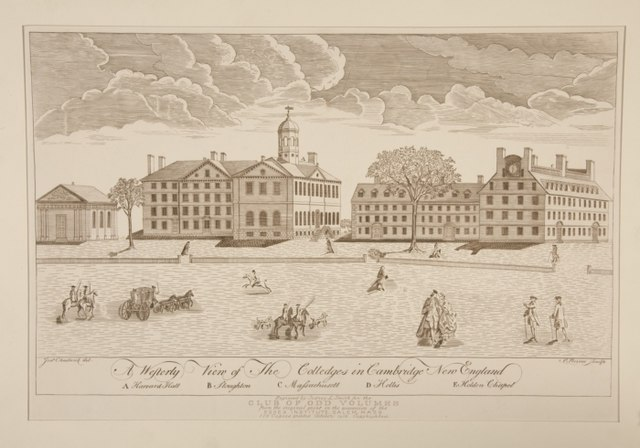

History
Harvard was established in 1636 by vote of the Great and General Court of the Massachusetts Bay
Colony. In 1638, it acquired British North America's first known printing press.[19][20] In 1639, it
was named Harvard College after deceased clergyman John Harvard, an alumnus of the University of
Cambridge who had left the school £779 and his library of some 400 volumes.[21] The charter creating
the Harvard Corporation was granted in 1650.
Campuses
Click
Here To open Image
Harvard's 209-acre (85 ha) main campus is centered on Harvard Yard ("the Yard") in Cambridge,
about 3 miles (5 km) west-northwest of downtown Boston, and extends into the surrounding Harvard
Square neighborhood. The Yard contains administrative offices such as University Hall and
Massachusetts Hall; libraries such as Widener, Pusey, Houghton, and Lamont; and Memorial Church.
In 19th Century

In the 19th century, Enlightenment ideas of reason and free will were widespread among
Congregational ministers, putting those ministers and their congregations in tension with more
traditionalist, Calvinist parties. When Hollis Professor of Divinity David Tappan died in 1803 and
President Joseph Willard died a year later, a struggle broke out over their replacements. Henry Ware
was elected to the Hollis chair in 1805, and the liberal Samuel Webber was appointed to the
presidency two years later, signaling the shift from the dominance of traditional ideas at Harvard
to the dominance of liberal, Arminian ideas.
{kind=link}
{kind=link}